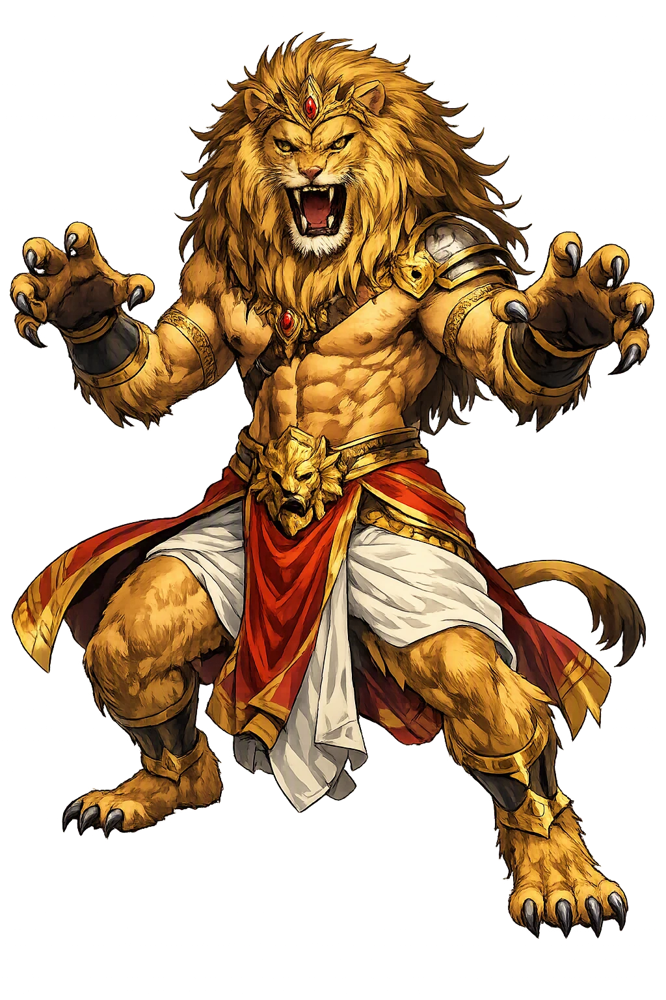
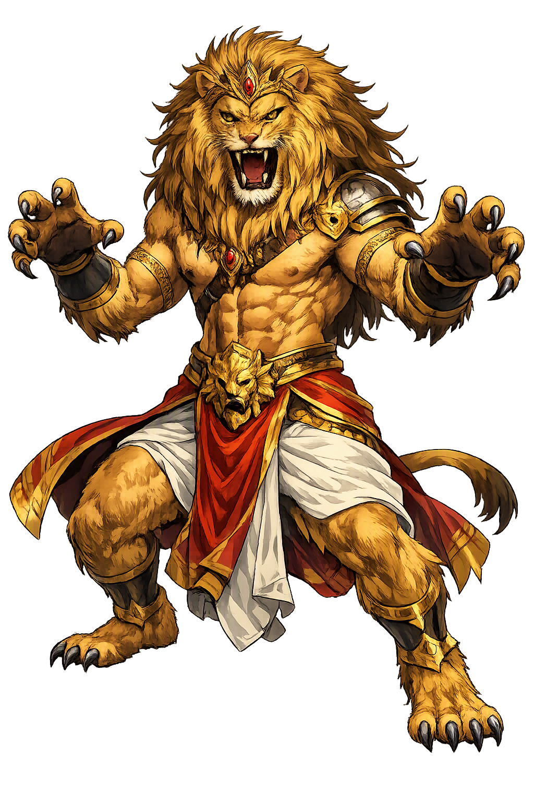

Stories of Narasiṃha
The stories of Narasiṃha tell how Viṣṇu defeated a loophole-perfect boon: neither man nor beast could kill the tyrant, so the god came as both at once — a man-lion bursting from a palace pillar at twilight, on a threshold, with claws. The Purāṇic cycle turns on the devotion of the tyrant's own son.
Hiraṇyakaśipu, king of the daityas, performed austerities so severe that Brahmā offered him a boon. Suspicious of every loophole, the demon stipulated that he should not die by day or night, indoors or outdoors, on earth or in the sky, by weapon or by hand, by man or beast, by god, demon, or nāga. Granted near-invulnerability, he conquered the three worlds and forbade the very name of Viṣṇu — commanding his own subjects, on pain of death, to worship him alone. The Bhāgavata Purāṇa (7.3) makes the stipulation a masterpiece of conditional theology: Hiraṇyakaśipu does not ask for immortality, which Brahmā cannot give, but for a contract so airtight that only the maker of loopholes could breach it. His blasphemy completes his doom, for by banning Viṣṇu's name from his own household he makes his own son — the boy Prahlāda, who loves the banned god from the womb — the hinge on which the entire boon will turn.
Prahlāda, the tyrant's son, refused the milk of his father's ideology along with his nurse's milk: asked what he had learned, the boy answered that the best of all teachings is devotion to Viṣṇu. Hiraṇyakaśipu tried to destroy him — poison in his milk, serpents in his bed, mantra-hurled weapons, a mountain dropped on his head, a fire fed by sorcery. Each attempt failed as devotion summoned rescue, and the boy emerged unburned, unbitten, unbroken, reciting the names of the god (Bhāgavata Purāṇa 7.5–7.8). The text's power lies in the contrast it never softens: the father holds every worldly power — armies, sorcery, a boon from Brahmā himself — and the son holds only a name, and the name keeps winning. Prahlāda became, for later bhakti theology, the type of the devotee whom nothing can finally injure. His serenity in the face of death is the cycle's quiet, indestructible center — the still point around which all of his father's fury breaks.
'Is your Viṣṇu in this pillar?' Hiraṇyakaśipu smashed a golden column of his own palace with his mace — and the pillar answered. From within the masonry came a sound no one in the three worlds had heard before; the column split, and out of it erupted a being that was neither man nor beast: Narasiṃha, the man-lion, maned and roaring, filling the hall with radiance and terror (Bhāgavata Purāṇa 7.8; Viṣṇu Purāṇa 1.19–20). The dying light that streamed through the lattices was neither day nor night. The threshold on which the god seized the tyrant was neither indoors nor out. The claws that disemboweled him were neither weapon nor hand. And the avenger was neither man nor god, neither demon nor beast — exactly the thing for which the boon's careful clauses had never been written. Every condition was honored to the letter and annulled by a form the letter could not imagine. The Purāṇas stage the scene as a trial in which the cosmos itself acts as counsel for the prosecution — and in which devotion, not force, set the whole machinery in motion.
Narasiṃha stretched Hiraṇyakaśipu across his thighs and tore him open with his claws, and the three worlds exhaled — but the god's fury did not stop with the killing. His rage blazed until no god dared approach him, until the devas themselves sent the one being the man-lion would not strike: Prahlāda, the child the demon had tried to murder. The boy came unafraid, offering garlands and hymns, and the fire went out of the lion's eyes. Narasiṃha blessed him and granted him the throne of the asuras (Bhāgavata Purāṇa 7.10; Viṣṇu Purāṇa 1.20). It is the cycle's deliberate climax: the power that broke a tyrant bows to a child's composure. Later Śaiva tradition complicates the peace — in the Śiva Purāṇa's telling, the burning man-lion is stilled only when Śiva descends as the bird-lion Śarabheśvara and grapples him quiet. The sources openly disagree, and the disagreement fed centuries of Vaiṣṇava–Śaiva debate; that disagreement is itself part of the myth's afterlife.
In the Nallamala hills of Andhra Pradesh, local sacred geography multiplies one myth into nine. The Ahobilam tradition knows Nava-Narasimha — nine shrines scattered across forest, cliff, and gorge — where the man-lion is said to have ranged after the killing, each form tied to a rock, a spring, or a cave and each approachable only along the paths of that landscape. The sthala-purāṇas transfer the Purāṇic climax into geology: the god who emerged from architecture at twilight now inheres in the hills themselves, and devotees read the escarpments as his body. The development is transparent and well attested: by the medieval period Narasiṃha had become less a character in one story than a territorial deity whose nine forms guard nine thresholds of the forest. Pilgrimage binds the sites into a single circuit walked in the cool months, turning the Purāṇas' single afternoon in a palace hall into a landscape the devotee must cross on foot — the loophole god, guarding every boundary of his own country.
Man-Lion Avatar
Narasiṃha is Viṣṇu's man-lion avatāra, the fourth descent of the preserver god, who answered a tyrant's loophole-perfect boon with a form neither man nor beast. Worshipped across India as the god of twilight and the guardian of every threshold, he embodies divine ferocity governed by devotion.
The central domain: Viṣṇu's fourth avatāra — the form no clause of the tyrant's boon could exclude.
Nara-siṃha, 'man-lion': nara 'man' + siṃha 'lion' — the hybrid the boon never imagined.
The restoration Narasiṃha recovers the anusvāra (ṃ) that plain ASCII deletes — the nasal mark the Sanskrit tradition writes.
Attested across the Purāṇic corpus — Bhāgavata 7, Viṣṇu 1.17–20, Narasimha Purāṇa — and in temple epigraphy from the Gupta age onward.
From the original script to the living URL
नरसिंह
The name in its original Sanskrit form. Narasiṃha (नरसिंह) is attested in the source tradition — “The Man-Lion — the fourth avatāra of Viṣṇu”. Its nasal retroflexes carry the full phonetic and orthographic weight of the source tradition.
narasimha
Reduced to plain narasimha, the name loses everything that made it specific: nasal retroflexes. What remains is an ASCII string that machines can parse but that no longer speaks with its original voice.
Narasiṃha
The Unicode restoration recovers what ASCII flattened. Narasiṃha restores nasal retroflexes, returning the name to its original written dignity. The domain encodes to Punycode, but the browser displays the truth.
Narasiṃha.com → xn--narasiha-m89c.com
The non-ASCII characters in Narasiṃha are encoded while the ASCII remains visible. To the DNS, it is Punycode. To humanity, it is Narasiṃha.
Owned, ideal, and ASCII forms of Narasiṃha
Narasiṃha
Restores नरसिंह. The live temple domain — narasiṃha.com.
narasimha
Flattens नरसिंह. The plain ASCII fallback — what DNS and legacy systems see.
How Narasiṃha was spoken
How Narasiṃha travels from ancient script to the modern URL
Narasiṃha is the divine answer to a lawyer's question: what can kill the man who closed every door? The tradition's answer refuses the terms of the contract — not by breaking it, which would make the god a cheat, but by stepping into the one space the contract could not name: twilight, threshold, claw, man-lion. It is mythology doing what it does at its best, exposing the poverty of exhaustive conditions. The boon fails not because it was poorly drafted but because reality is wider than any list. And the myth's second movement is the greater one: the killing does not end the story — a child's unafraid gentleness does. Between the disemboweled tyrant and the blessed boy, the Purāṇas place the cycle's true thesis: the ferocity that guards the universe is finally governed by, and governs itself for, devotion.
Enter Extended Lore